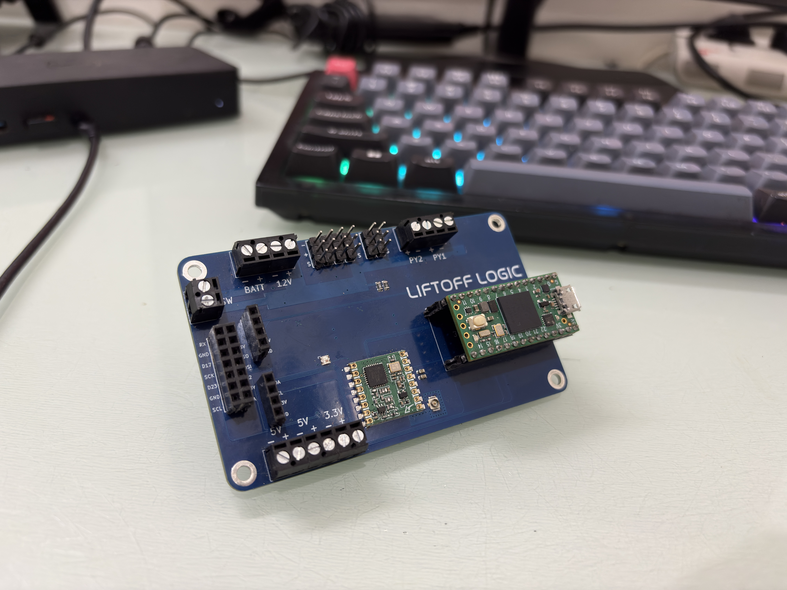
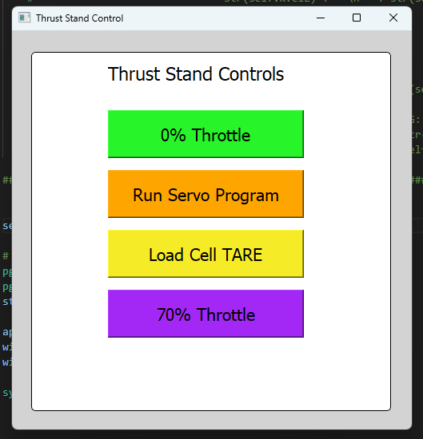

Test Stand
The test stand is an important part of hopper development and has two main purposes. First, it measures the thrust produced by the propulsion unit in grams. Second, it measures the side force produced when the TVC vanes are deflected. This data can then be used to create a transfer function that maps servo angle to the resulting side force.
Hardware
The test stand hardware is essentially divided into two separate sections, both secured in place using clamps and careful mounting.
The primary section houses the hopper’s propulsion unit, mounted inverted on the motor thrust load cell. The propulsion unit is secured with screws and 3D-printed fixtures, while the entire assembly is mounted to 2020 aluminium extrusion and clamped firmly to a stable surface.
The second section is an L-shaped assembly made from the same 2020 aluminium extrusion. A load cell is mounted vertically against the X+ TVC servo to measure the side forces generated by the two Y-axis servos.
I didn’t put nearly as much thought into the test stand as I probably should have; I mostly built it as I went. That’s somewhat concerning given the amount of force the hopper can generate. Fortunately, with a sufficiently excessive number of clamps, the result is surprisingly sturdy.


Electronics
The computer controlling the test stand is called Liftoff Logic. I originally designed it to be the launchpad computer for a previous TVC rocket project, but when that project didn’t pan out, I ended up repurposing it for the test stand.
The computer is pretty over-specced for the job. It has a Teensy 4.0 as the MCU, six servo outputs, two pyro channels, a telemetry radio, a dual buck-converter setup for power, and a ton of I/O.
In reality, the tasks it has to perform are pretty trivial: updating the servo angle by 3° every 2 seconds and printing the servo angle, motor thrust, throttle value, and side force to serial.
Software
Liftoff Logic’s code is written in C++ using the Arduino framework. As mentioned in the previous section, the code is pretty simple: it updates the servo angle every 2 seconds based on a list of preprogrammed angles, while also reading and printing data from the thrust load cell’s HX711 and the side force load cell’s HX711. All of the data is sent over serial.
I also wrote a basic GUI in Python using PyQt5 to control different parts of the test stand. It can set the motor thrust to 0% (no thrust) or 70% (the nominal thrust during flight), run the servo program routine, and reset the load cell. Each button sends a unique hex code over serial, which Liftoff Logic reads and uses to run the corresponding subroutine.
